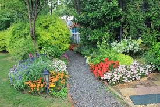

Our Work in Action


Dropveil provides precision irrigation solutions that gently nourish your garden while conserving water and boosting plant health. Our patented water distribution system ensures every drop counts, delivering moisture exactly where your plants need it most, when they need it most, without wasteful runoff or evaporation that plagues conventional irrigation methods.
Founded in 2010 by irrigation specialist Marcus Greenfield, Dropveil has been revolutionizing garden irrigation with our patented gentle watering technology. What began as a small operation serving urban gardens in Brooklyn has grown into the premier irrigation service provider for the entire New York metropolitan area.
Our name embodies our philosophy - water that gently covers like a veil, nourishing without overwhelming. We've spent over a decade perfecting our approach, combining traditional horticultural knowledge with cutting-edge water conservation technology. Today, we serve hundreds of residential and commercial clients throughout the New York area, helping them achieve lush, healthy landscapes while conserving water through our precision irrigation systems.
Our founder Marcus Greenfield demonstrates the Dropveil drip irrigation system at a community garden installation in Battery Park.
At Dropveil, we offer a full suite of specialized watering solutions meticulously tailored to your landscape's unique needs, climate conditions, and horticultural requirements. Our certified irrigation specialists provide expert guidance every step of the way.
Our precision water delivery systems target plant roots directly with minimal evaporation or runoff, conserving water while promoting healthier plant growth. We design each system specifically for your landscape, considering plant types, sun exposure, soil composition, and slope. Our high-efficiency emitters deliver water slowly at rates from 0.5 to 2 gallons per hour, while our professional-grade tubing resists kinking and UV damage for years of reliable service.
Our intelligent weather-adaptive controllers automatically adjust watering schedules based on real-time hyperlocal weather data, seasonal changes, and even soil moisture sensors to optimize water usage. The system connects to WiFi and can be controlled remotely via our mobile app, allowing you to make adjustments from anywhere. We offer precision rotary nozzles that reduce misting and wind drift while maintaining excellent coverage, cutting water use by up to 30% compared to conventional spray heads.
Our expert evaluation of your current irrigation system includes detailed water audits, efficiency scoring, and personalized recommendations for improvements tailored to your landscape's specific needs. We assess water pressure, distribution uniformity, precipitation rates, and system longevity before creating a customized water conservation plan. The consultation includes a 15-page report detailing current issues, proposed solutions, equipment recommendations, and projected water savings over 5 years.
Our bi-annual maintenance program ensures your irrigation system performs optimally year-round. In spring, we winterize systems by blowing out pipes to prevent freeze damage. In fall, we conduct comprehensive performance testing, nozzle cleaning, pressure checks, and controller optimization to prepare for the growing season ahead.
We help clients navigate available municipal rebates and tax incentives for water-efficient irrigation upgrades. Our team handles all paperwork to secure rebates of up to $500 for qualifying system upgrades. Since 2015, we've helped clients reclaim over $120,000 in conservation credits.
Our commitment to excellence, sustainable practices, and horticultural expertise sets us apart in the world of professional irrigation services.
Our experienced teams complete most installations in a single day with minimal disruption to your property. We pride ourselves on our efficiency and attention to detail, ensuring that your irrigation system is set up correctly and ready to perform from day one.
Our systems typically pay for themselves in water savings within 2-3 growing seasons. By utilizing advanced technology and efficient design, we help you save money on your water bills while maintaining a vibrant landscape.
We use only commercial-grade components designed to withstand years of sun, rain, and freezing temperatures. Our systems are built to last, ensuring that your investment continues to provide value for years to come.
"Dropveil transformed my garden! The irrigation system is efficient and my plants have never looked better! The team was professional and knowledgeable, guiding me through every step of the process."
"Professional service and great results. Highly recommend Dropveil for anyone looking to improve their garden! Their attention to detail and commitment to customer satisfaction is unmatched."
"The team was knowledgeable and friendly. They helped me choose the right system for my needs! I appreciate their follow-up service to ensure everything is working perfectly."
The information provided on this website is for general informational purposes only. We do not guarantee the accuracy or completeness of any information on this site. Always consult with a professional before making any decisions regarding your irrigation needs. Individual results may vary based on specific conditions and practices.
At Dropveil, we prioritize our customers' needs and strive to exceed their expectations. Your satisfaction is our top priority, and we are committed to providing the best irrigation solutions tailored to your unique landscape. Our dedicated team is always available to answer your questions and provide ongoing support.
Contact us today to learn more about how we can help you achieve a thriving garden!